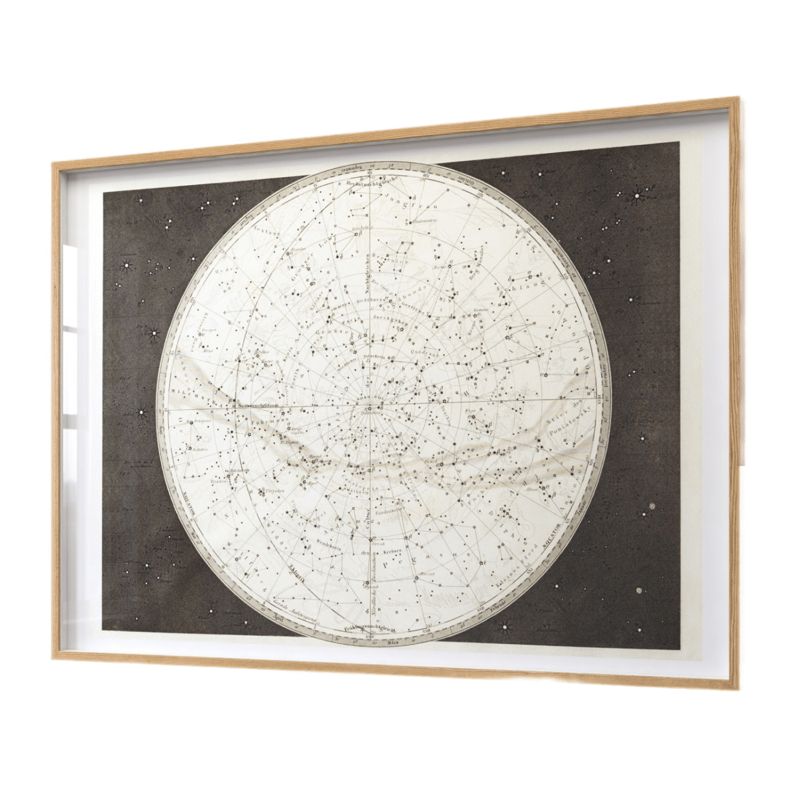
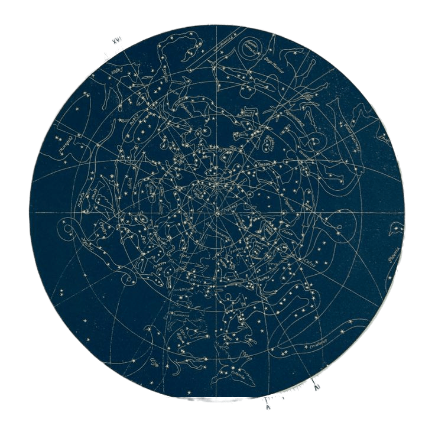
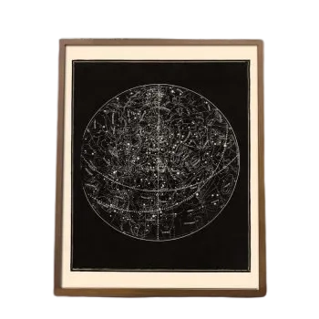
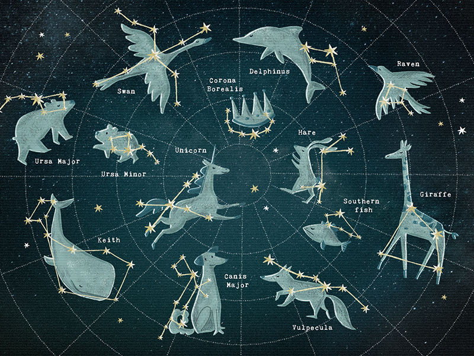

Welcome to our store of personalized constellation maps! We are a team of astronomy and design
enthusiasts who aim to blend emotions and the beauty of the cosmos into unique products.
Our constellation maps are not just images; they are visual stories that leave a lasting impact on hearts and walls.
Our Mission
Our mission is to create extraordinary moments through cosmic beauty. We want to enable you to discover a magical moment in the sky that held significance in your life.
We create constellation maps that reflect what you saw on a specific date and location.
Our products not only leave an aesthetic mark but also forge an emotional connection with the cosmic history.
Products

Constellation Map - Image
(€6.00)

Constellation Map - Carpet
(€5.00)

Constellation Map - Image
(€5.50)

Constellation Map - Poster
(€4.00)
Exploring the Wonders of Constellations
Constellations are groups of stars that form recognizable patterns in the night sky. For thousands of years, cultures around the world have looked up at these celestial formations and woven fascinating stories and myths around them. Here are a few remarkable constellations:
1. Orion the Hunter
One of the most iconic winter constellations is Orion, known as "The Hunter." It features a distinctive row of three bright stars that form Orion's Belt. According to mythology, Orion was a skilled hunter pursued by a scorpion constellation (Scorpius) across the sky.
2. Ursa Major and Ursa Minor
The Big Dipper and the Little Dipper are part of the Ursa Major and Ursa Minor constellations, respectively. The North Star (Polaris) is located at the tip of the handle of the Little Dipper, making it a reliable guide for navigation in the Northern Hemisphere.
3. Cassiopeia the Queen
Cassiopeia is a "W"-shaped constellation that represents a queen seated in her celestial throne. The constellation is visible year-round in the northern sky. According to Greek mythology, Cassiopeia was a vain queen who boasted about her beauty.
4. Draco the Dragon
Draco is a long, winding constellation representing a dragon. It curves between the Big and Little Dippers and winds around the North Star. In Greek mythology, this dragon guarded the Golden Apples of the Hesperides.
5. Sagittarius the Archer
Sagittarius is often depicted as a centaur archer. It is located in the direction of the center of the Milky Way galaxy. In mythology, Sagittarius is associated with Chiron, a wise and gentle centaur.
6. Cygnus the Swan
Cygnus, also known as the Northern Cross, is a prominent summer constellation. It represents a swan flying across the Milky Way. Its brightest star, Deneb, is one of the vertices of the Summer Triangle.